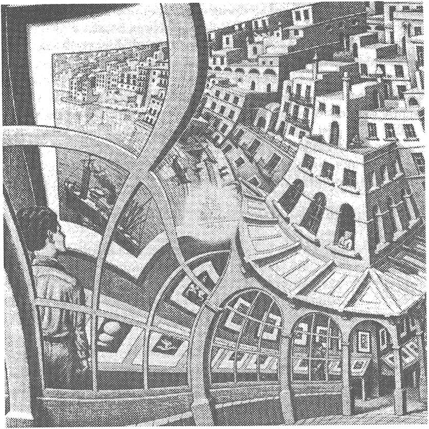
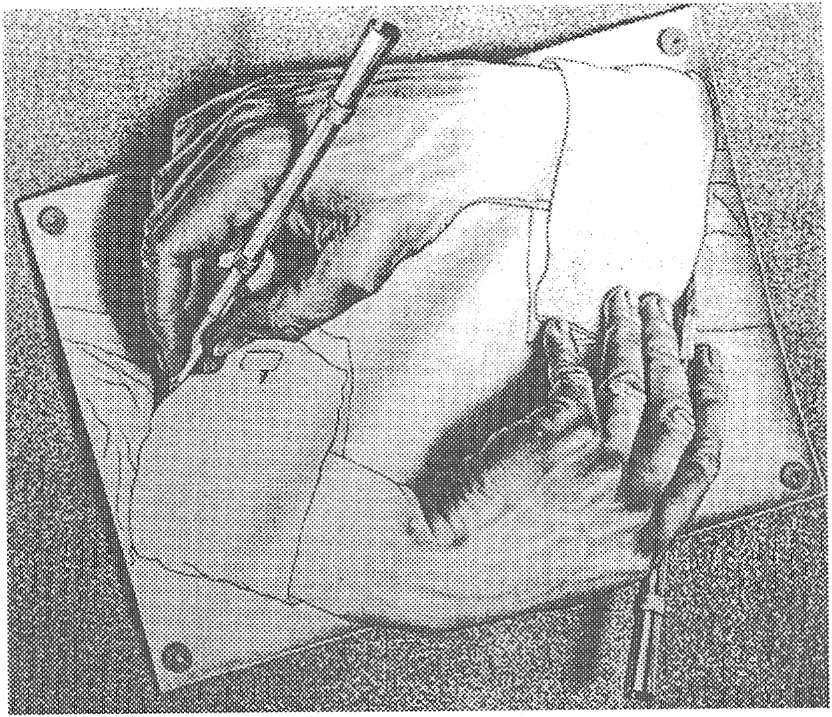

PARADOKSLAR ve DOLANIK HiYERARSiLER
Bir keresinde dolanık hiyerarşiler hakkında konuşmaktayken dinleyicilerimden biri bu tanımlamanın ne anlama geldiğini daha bilmeden ilgisini çekiverdiğini söylemişti. Hiyerarşilerin kendisine ataerkillik ve otoriteyi anımsattığını ama dolanık hiyerarşi teriminin daha özgürleştirici bir tonu olduğunu söyledi. Eğer sizin sezginiz de onunkine benziyorsa, o zaman dil paradokslarının ve mantık paradokslarının o büyülü, şaşırtıcı dünyasında bir keşif gezisine çıkmaya hazırlanmalısınız. Mantık paradoksal olabilir mi? Mantığın gücü paradoksları ortadan kaldırması değil miydi? Bu soruların cevapları dolanık hiyerarşilere yol açmaktadırlar.
Paradokslar mezarlığının girişine yaklaşırken, mitsel ölçülerde bir yaratıkla burun buruna geliyorsunuz. Onun Sfenks olduğunu hemen anlıyorsunuz. Sfenks'in size tabi ki kapıdan geçebilmeniz için doğru cevaplamanız gereken bir sorusu var: Sabah dört bacak üstünde, öğlen iki bacak üstünde ve akşam üç bacak üstünde yürüyen yaratık nedir? Bir an için kafanız karışıyor. Bu ne biçim bir soru? Belki de keşif geziniz başlamadan bitecek. Bulmacalar ve paradokslar oyununda siz daha yeni bir oyuncusunuz. Daha ileri bulmacalara hazır mısınız?Sherlock Holmes, yanında Bay Watson'la çıkageliyor ve rahat bir nefes alıyorsunuz. "Ben Oedipus" diye tanıtıyor kendini. "Sfenks'in sorusu bir bulmaca çünkü mantıksal tipleri karıştırıyor, değil mi?" diye soruyor.
Bu doğru, diye fark ediyorsunuz. Bu keşif gezisine çıkmadan önce mantıksal tipler hakkında bir şeyler öğrendiğiniz iyi olmuş. Ama ne? Neyse ki Oedipus devam ediyor. "Cümlenin bazı kelimelerinin sözlük anlamı var ama diğerlerinin daha yüksek mantıksal tipten bağlamsal anlamlan var. Şaşkınlığınıza neden olan da, mecazların tipik özelliği olan, iki tipin yan yana bulunuşudur." Size cesaret veren şekilde gülümsüyor.
Tamam, tamam. Sabah, öğlen ve akşam yaşamlarımıza gönderme yapıyor: çocukluğumuza, gençliğimize ve ihtiyarlığımıza. Gerçekten de çocukluğumuzda dört bacak üstünde yürürüz, emekleriz; gençliğimizde iki bacağımızın üstünde ve üç bacak da ihtiyarlığımızda iki bacak ve bir bastonla yürümemiz için bir mecaz. Uydu! Sfenks'e gidiyor ve cevaplıyorsunuz: "İnsan". Kapı açılıyor.
Kapıdan geçerken, aklınıza bir şey geliyor. Nasıl olur da, eski Yunan'dan mitolojik bir karakter olan Oedipus mantıksal tipler gibi modern terminolojiyi bilebilir? Ama üstünde düşünmek için zaman yok: Dikkatinizi yeni bir meydan okumaya vermeniz gerek. Birisi, yanındaki bir adamı işaret ederek "Epimenides adlı bu Giritli, 'Tüm Giritliler yalancıdır/1 diyor. Doğru mu yoksa yalan mı söylüyor?" diyerek size meydan okur tarzda soruyor. Eh, bir bakalım, diye akıl yürütüyorsunuz. Eğer doğru söylüyorsa, o zaman tüm Giritliler yalancıdır; o zaman o da yalan söylemektedir. Bu bir çelişki. Peki, başa dönelim. Eğer yalan söylüyorsa, o zaman tüm Giritliler yalancı değildir ve o da gerçeği söylüyor olabilir. Ama bu da bir çelişki. Eğer evet derseniz, cevap hayır yankılanma-sına ve eğer hayır derseniz evet yankılanmasına neden olacak, ila nihai. Böyle bir bulmacayı nasıl çözebilirsiniz ki?
"Şey, bulmacayı çözemiyorsan en azından analiz etmesini öğrenebilirsin." Sanki bir sihir, yanınızda bir yardımcı daha beliriyor. "Adım Gregory Bateson," diye tanıtıyor kendini. "Karşılaştığınız şey ünlü yalancının paradoksu: Epimenides, 'Tüm Giritliler Yalancıdır/ diyen bir Giritlidir. Birinci önerme ikinci önermenin bağlamını yaratır. İkincisi sınıflandırır. İkinci önerme eğer sıradan olsaydı, birinci önermeyi rahat bırakırdı, ama hayır! Bu ikinci önerme asli olanı kendi bağlamında yeniden sınıflama tepkisi veriyor."
"Bu mantık tiplerinin bir karışımı, şimdi anlıyorum," diye keyifleniyorsunuz.
"Evet ama sıradan bir karışım değil. Bakın, birincil ikincili tanımlar: Eğer evetse, o zaman hayır, o zaman evet, o zaman hayır. Sonsuza dek sürer. Norbert Wiener bu paradoksu bir bilgisayara versek mürekkebi bitene dek Evet... Hayır... Evet... Hayır... Evet... dizileri basardı, der. Bu, insanın mantık yoluyla kaçamayacağı zekice bir kısır döngü."
"Paradoksu çözmenin bir yolu yok yani?" Sesiniz hayal kırıklığınızı yansıtıyor.
"Tabi ki var çünkü siz bir silikon bilgisayar değilsiniz," diyor Bateson. "Size bir ipucu vereyim. Varsayalım kapınıza bir satıcı geldi ve şöyle diyor: 'Size elli dolara harika bir yelpaze vereceğim ama çalıntıdır. Nakit mi ödersiniz, kredi kartınızla mı?' Ne yapardınız?"
"Kapıyı suratına kapardım!" bunun cevabını biliyorsunuz. (Hangisini seçerdin: Elinin kesilmesini mi, kulağının kopmasını mı, diye şakalar yapan arkadaşınızı hatırlıyorsunuz. O ilişki pek kısa sürmüştü.)
"Tamamen doğru," diye gülümsüyor Bateson. "Bir paradoksun kısır döngüsünden çıkmanın yolu kapıyı kapatmak,
sistemin dışına atlamaktır. Şuradaki beyefendinin elinde iyi bir örnek var." Size, üstünde "Bu Oyunu Sadece İki Kişi Oynayabilir" yazan bir tabelanın bulunduğu masada oturan adamı gösteriyor.
Adam kendisini G. Spencer Brown diye tanıtıyor. Oyundan nasıl çıkılacağının sunumunu yapacağını iddia ediyor.2 Ancak anlamak için yalancının paradoksuna matematik denklem halinde bakmak zorundasınız:
x = -l/x.
Eğer denklemin sağında +1 çözümünü denerseniz, denklemin sonucu -1 çıkar; -1 denediğinizde ise +1 çıkar. Çözüm +1 ve -1 arasında salınır, tıpkı yalancının paradoksunun evet/hayır salınımı gibi.
Evet, bunu görebiliyorsunuz. "Peki ama bu çılgın sonsuz salınımdan çıkmanın yolu ne?"
Matematikte bu problemin çok ünlü bir çözümü var, diyor Brown size. i niceliğini kök √-1 olarak tanımlayın, i2 = -1 olduğuna dikkat edin. i2 = -1 denkleminin her iki yanını i'ye bölün,
i = -l/i çıkar.
Bu z'nin alternatif tanımıdır. Şimdi x=i çözümünü denklemin sol yanında deneyin
x = -l/x.
Denklemin sağ yanı artık -1/ i vermektedir, bu da tanım gereği i'ye eşittir, çelişki yoktur. Demek ki sanal sayı diyebileceğimiz i, paradoksu aşmaktadır.
"Bu harika." Nefesiniz kesilmiş. "Siz bir dahisiniz."
"Bu oyunu sadece iki kişi oynayabilir," diyen Brown göz kırpıyor.
Uzaktaki bir şey dikkatinizi çekiyor: Üstünde "Gödel, Escher, Bach" yazan kocaman bir tabela olan bir çadır. Siz çadıra yaklaşırken, oğlan çocuğu yüzlü bir adam dikkatinizi çekmeyi başarıyor ve yanma gelmenizi işaret ediyor. "Adım Dr. Geb," diyor. "Douglas Hofstaderin mesajını yaymaktayım. Sanırım siz onun Gödel, Escher, Bach adlı kitabını okudu- nuz."3
"Evet," diye mırıldanıyorsunuz, biraz şaşırarak. "Ama pek anladığımı söyleyemem."
"Bakın, aslında çok basit," diyor Hofstadter'in elçisi keyifle. "Tüm anlamanız gereken dolanık hiyerarşiler."
"Dolanık neler?"
"Hiyerarşiler. Neler değil. Basit bir hiyerarşide aşağı düzey üst düzeyi besler ve üst düzey geri tepki vermez. Basit bir geri beslemede üst düzey geri tepki verir ama yine de neyin ne olduğunu söyleyebilirsiniz. Dolanık hiyerarşilerde ise, iki düzey öylesine karışmıştır ki farklı mantık düzeylerini tanımlayamazsınız."
"Ama bu sadece bir etiket," diye omuz silkiyorsunuz umursamadan, Hofstadter'in fikrini özümseme konusunda hala tereddüttesiniz.
"Düşünmüyorsunuz, dolanık hiyerarşik sistemlerin çok önemli bir özelliğini gözden kaçırmışsınız. Anlıyorsunuz ya, sizin gelişiminizi takip ediyordum."
"Sanırım büyük bilgeliğinizle neyi kaçırdığımı da açıklayacaksınız," diyorsunuz hafif bir alaycılıkla.
"Bu sistemler -yalancının paradoksu esaslı örneklerinden biridir- otonomdurlar. Kendileri hakkında konuşurlar. Onları sıradan bir cümleyle kıyaslayın, örneğin, 'Yüzünüz kırmızıdır.' Sıradan bir cümle, kendisi dışındaki bir şeye gönderme yapar. Ama yalancının paradoksunun karmaşık cümlesi kendisine gönderme yapar. İşte onun sonsuz sanrısına
böyle takılırsınız."
Kabul etmekten nefret ediyorsunuz ama dikkate değer bir içgörü.
"Başka bir deyişle' diye devam ediyor Hofstadter'in elçisi, "bizler kendine gönderme yapan sistemlerle ilgileniyoruz. Dolanık hiyerarşi kendine göndermeyi elde etmenin bir yoludur."
"Dr. Geb, bu duyduğum en ilginç şey. Ben meselesi hakkında ilgi duyduğum bazı şeyler var, lütfen biraz daha ayrıntılı anlatır mısınız?" diye teslim oluyorsunuz. Hofstadter'in elçisi olan adam hiç de isteksiz değil.
"Sistemin içini mantıklı biçimde görme girişimimize karşı bir peçe, berrak bir taş duvar bulunması sebebiyle Benlik ortaya çıkıyor. Bu peçenin ardını görmemizi engelleyen süreksizliktir; yalancının paradoksundaki sonsuz salınım- dır."
"Anladığımı sanmıyorum."
Size bir kez daha anlatmak yerine Hofstadter heveslisi, Hollandalı ressam M. C. Escher'in yaptığı bir resme bakmanızda ısrar ediyor. "Şu karşıdaki çadırın içindeki Escher müzesinde," diyor, bir yandan da sizi oraya doğru götürüyor, "Resmin adı Resim Galerisi. Çok garip bir tablo ama tartışmamızın ana noktasıyla yakından ilgili."
Çadırın içinde, resmi (Şekil 32) inceliyorsunuz. Resimde, bir galerinin içindeki genç bir adam bir kasabanın limanında demir atmış bir geminin resmine bakmakta. Ama bu da nesi? Kasabada, demir atmış bir gemiye bakan genç bir adamın bulunduğu bir resim galerisi var.
Tanrım, bu bir dolanık hiyerarşi, diyorsunuz kendinize. Kasabanın tüm binalarından geçtikten sonra, resim başladığı noktaya dönüyor, salınımına tekrar başlıyor ve böylece izleyicilerin dikkatini sürekli olarak kendisine çekiyor.

Şekil 32. Escher’in Resim Galerisi, bir dolanık hiyerarşi. Ortadaki beyaz nokta bir süreksizliği belirtir. © 1956, M. C. Escher/Cordon Art- Baarn-Holland. (Escher Vakfının izniyle kullanılmıştır.)
Sevinçle sizi buraya getiren rehberinize dönüyorsunuz. "Meseleyi anladınız," diyor ağzı kulaklarında. "Evet, teşekkür ederim."
"Resmin ortasındaki beyaz noktaya dikkat ettiniz mi?" diye aniden soruyor Dr. Geb. Onu gördünüz ama pek dikkat etmediğinizi kabul ediyorsunuz."Üstünde Escher'in imzası bulunan beyaz nokta, onun dolanık hiyerarşiler konusunda ne kadar açık ve net olduğunu göstermektedir. Bakın, Escher bu resmi çizim yapmanın geleneksel kurallarını ihlal etmeksizin, deyim yerindeyse, kendi üstüne katlayamazdı, demek ki bir süreksizliğin olması gerekiyordu. Beyaz nokta, tüm dolanık hiyerarşilerin doğasında olan süreksizliği gözlemciye hatırlatmaktadır."
"Süreksizlikten peçe ve kendine gönderme yapma çıkar," diye çığlık atıyorsunuz.
"Evet." Dr. Geb pek memnun. "Ama bir şey daha var, tek adımlı kendine gönderme yapan 'Ben bir yalancıyım'4 cümlesi üstünde düşündüğünüzde kolayca göreceğiniz bir başka özellik daha var. Bu cümle yalan söylediğini söylüyor. Bu, daha önce karşılaştığınız yalancının paradoksundaki aynı sistem; sadece şart içinde şart biçimi ortadan kaldırılmıştır. Anladınız mı?"
"Evet."
"Ama bu biçimde, başka bir şey netleşmeye başlar. Cümlenin kendine gönderme yapması için cümlenin kendisinden söz ediyor olmasının bariz olması şart değildir. Örneğin, eğer cümleyi bir çocuğa ya da dilimize aşina olmayan bir yabancıya gösterirseniz, karşılıkları 'Niçin yalancısın?' şeklinde olabilir. Cümlenin aslında kendine gönderme yaptığını ilk bakışta göremeyebilirler. Demek ki cümlenin kendine gönderme yapması bizim açık değil, saklı dil bilgimizden gelmektedir. Bu cümle, adeta bir buz dağının ucudur. Altında görünmeyen kocaman bir yapı vardır. Bunu bozulmamış düzey diye adlandırıyoruz. Şüphesiz sistemin bakış açısından bakıldığında bozulmamıştır. Gelin Escher'in bir başka tablosuna bakalım, bunun adı Çizen Eller (Şekil 33).
Bu resimdeki sol el sağ eli çizmektedir, sağ el de sol eli çizmektedir; birbirlerini çiziyorlar. Bu kendini yapmadır.

Şekil 33. Çizen Eller, M. C. Escher'in tablosu. © 1948, M. C. Escher/ Cordon Art-Baarn-Holland. (Escher Vakfının izniyle kullanılmıştır.)
Ayrıca bir dolanık hiyerarşidir. Peki sistem kendi kendini nasıl yapmaktadır? Bu illüzyon ancak sistem içinde kaldığınızda yaratılır. Sistemin dışından, onu izlediğiniz noktadan bakıldığında, ressam Escher'in her iki' eli bozulmamış düzeyden çizmiş olduğunu görürüz."
Heyecanla Dr. Geb'e Escher'in resminde neler gördüğünüzü anlatıyorsunuz. Başıyla onaylıyor ve hevesle şöyle diyor: "Dr. Hofstadter'i dolanık hiyerarşiler konusunda ilgilendiren şudur: Beyin bilgisayarı programlarının, (birisi bizim zihin dediğimiz şey) bir dolanık hiyerarşi oluşturduğunu ve bu dolanıklıktan da bizim çok görkemli benliğimizin çıktığını düşünüyor."
"Bu sonuca varmak için biraz yüksek bir sıçrama değil mi?" Siz yüksek sıçramalardan şüpheleniyorsunuz, hep şüphelenmiştiniz. İnsan, gözleri çılgınca bakan bilim adamlarının iddialarından sakınmalıdır.
"Şey, bilmelisiniz ki, bu sorun üstünde çok düşünüyor, ve eminim ki bir gün şuurlu benliği olan bir silikon bilgisayar üreterek bunu ispatlayacak," diyor Hofstadter'in destekçisi mırıldanarak.
Hofstadter'in rüyasından etkilendiniz. Toplumumuzun rüyası olan insanlara ihtiyacı var, ama mantığı savunma ihtiyacı da duyuyorsunuz. "Kabul etmeliyim ki ben dolanık hiyerarşiler konusunda hala biraz çekincedeyim," diyorsunuz. "Mantıksal tipleri öğrendiğimde, bunların mantığı saf tutmak üzere icat edildikleri söylendi bana. Ama siz, ya da Dr. Hofstadter, bunları karıştırıyorsunuz. Sadece kelime oyunlarıyla hayali olarak değil, gerçek doğal sistemler içinde de karıştırıyorsunuz. Doğanın bu ayrıcalığa izin verdiğini nerden bilebiliriz? Hem zaten, kelime-oyunlarıyla oluşturulan paradoksların keyfi, yapay bir tınısı var." Hofstadterle olmasa da en azından savunucularından biriyle size yıkılmaz görünen bir mantıkla tartışabilmekten dolayı çok mutlusunuz.
Ama Hofstadter'in taraftarı sizi karşılamaya hazır.
"Mantığı saf tutabileceğimizi de kim söylüyor?" diye itiraz ediyor. "Yoksa siz Gödel teoremini duymadınız mı? Dr. Hofstadter'in kitabını okudunuz sanmıştım."
"Size kitabı anlamadığımı söyledim. Zaten devamını okumamı engelleyen de Gödel teoremiydi."
"Aslında çok basittir. Mantıksal tipler Bertrand Russell ve Alfred Whitehead adlı iki matematikçi tarafından, dediğiniz gibi mantığı saf tutmak üzere icat edildi. Ama başka bir matematikçi, Kurt Gödel, paradoks içermeyen bir matematiksel sistem üretmek için yapılan herhangi bir girişimin eğer o sistem yeterli derecede karmaşık ise başarısızlığa mahkum olduğunu kanıtladı. Bunu, makul zenginlikte olan herhangi bir sistemin bir türlü tamamlanmış hale gelemediğini göstererek kanıtladı. Sistem içinde sistemin kanıtlayamadığı bir ibareyi her zaman bulabilirsin. Aslında sistem ya tam ama tutarsız ya da tutarlı ama eksik olabilir, fakat hem tutarlı hem de tamamlanmış olamaz. Gödel'in teoremini kanıtlama yolu, dolanık hiyerarşilerin sözde saf olmayan mantığını kullanmaktı. Böylece aralarında Russell ve Whitehead'in mantıksal tipler teorileri gibi tamamlanmış ve tutarlı bir matematiksel sistem olasılığını içeren birçok fikir çöpe atılmış oldu. Başka
sorunuz var mı?"
Daha başka soru sormaya cesaretiniz yok. Matematik sizin için yaban arısı kovanı gibi. Ne kadar çok kalırsanız, o kadar çok sokulma tehlikesi var. Beyefendiye hevesle teşekkür ediyor ve en yakın çıkışa yöneliyorsunuz.
Ama, tabi ki, daha siz çıkışa varmadan ben sizi durduruyorum. Beni gördüğünüz için şaşırıyorsunuz. "Burada ne arıyorsunuz?" diye soruyorsunuz.
"Bu benim kitabım. İstediğim yerine girerim," diye dalga geçiyorum. "Söylesenize, Hofstadter'in kendini bilen bir silikon bilgisayar inşa etmesi fikrine ne diyorsunuz?"
"Emin değilim ama ilginç bir fikre benziyor," diye cevaplıyorsunuz."Biliyorum. Dolanık hiyerarşi fikri harikulade. Ama herhangi biri size Hofstadter’in yapıları gereği sürekli olan klasik silikon bilgisayarların programlarında süreksizliği nasıl yaratacağını açıkladı mı? Bu, öyle birbirleri üzerinde geri besleme yapan ve nedensellik zincirini izleyemeyeceğiniz kadar karışan programlardan falan oluşma değil. Hiç de öyle değil. Gerçekten de bir süreksizlik, sistemin dışına gerçek bir sıçrama, bir bozulmamış düzey olmalıdır. Başka bir deyişle, soru şudur: Klasik bir sistem olarak görülen beynimiz nasıl olur da bozulmamış düzeye sahip olabilir? Klasik sistemlerin temeli olan materyalist realizm felsefesinde sadece tek bir gerçeklik düzeyi vardır, o da maddesel gerçeklik düzeyidir. Öyleyse bozulmamış düzeyin faaliyet alanı nerededir?"
"Bana sormayın," diyorsunuz. "Siz ne öneriyorsunuz?"
"Size bir hikaye anlatayım. Sufi üstadı Nasreddin Hoca'yı bir gün, göle kepçeyle yoğurt dökerken görmüşler. Yoldan geçenler 'Hoca ne yapıyorsun?' diye sormuşlar.
'Yoğurt mayalıyorum,' diye cevaplamış Hoca.
'Ama göl hiç maya tutar mı!' diye itiraz etmiş görenler.
O da iyimserlikle cevaplamış: 'Ya tutarsa!'"
Kıkırdıyorsunuz. "Komik bir fıkra. Ama hikayeler hiçbir şey kanıtlamaz," diye itiraz ediyorsunuz.
"Siz Schrödinger'in kedisini duymadınız mı?" diye karşı saldırıya geçiyorum.
"Evet," diyorsunuz, keyfiniz biraz geri geliyor.
"Kuantum mekaniğine göre, kedi bir saat dolduktan sonra yarı ölü yarı diridir. Şimdi varsayalım kedinin ölü mü diri mi olduğunu gözlemlemek için bir makine kurulmuş olsun."
"Hepsini biliyorum," diyorsunuz dayanamayıp. "Kedinin ikiye ayrılmış hali makineye de bulaşır. Göstergesi kesin bir okuma yapamaz, şuurlu bir gözlemci onu kurtarana dek kedi ölü mü diri mi kesin bir sonuç veremez."
"Güzel. Ama şimdi varsayalım kedinin yanma tam bir cansız makineler hiyerarşisi yolladık, her biri kendinden bir öncekinin saptadığı sonucu gözlemliyor olsun. Kedinin kuantum ikiliği halini tüm makinelerin de kapacağını düşünmek mantıklı değil mi?"
Başınızla onaylıyorsunuz. Yeterince mantıklı görünüyor.
"Demek ki kedinin kuantum süperpozisyonundaki dalga fonksiyonunu edinerek, evrendeki tüm maddesel nesneleri, bulaşıcı kuantum süperpozisyonu kapma olasılığına açmış olduk. Kuantum süperpozisyonu evrensellik kazandı. Ama bir bedeli var. Anlıyor musunuz?"
"Hayır, anlamıyorum."
"Sistem kapalı değil."
"Haa."
"Bu açıklık ya da tamamlanmamışlık, eğer Schrödinger’in oyununu oynuyorsanız yani makro sistemlere kuantum kuramı tanımları atfediyorsanız, mantıksal bir gerekliliktir. İşte gerçek Gödel düğümü budur."5
"Nereye varmak istiyorsunuz?" diye soruyorsunuz, kafanız iyice karıştı.
"Düğümü çözmek için gerçekten de sistemin dışına atlayabilir olmamız gerek ve bu da, beynimizdeki bir kuantum makinenin yerel olmayan şuuruyla sistemi çökertmesi demektir. Demek ki sahici bir dolanık hiyerarşiye yani süreksizlik, bozulmamış düzey ve diğer her şeye sahip olabilmemiz için kafalarımızda kuantum esaslarıyla işleyen bir sistem olmalıdır."
"Gerçekten mi?"
Ama (bozulmamış düzeyin ayrıcalığını kullanarak süreksiz olarak) sorularınızı kesiyorum. Bir başlangıcı olan her şey, hatta beyinlerimizdeki kuantum esaslı sistemler gibi heyecanlı konular bile, şimdilik bir yerlerde bitmeli.
Tamam, artık dolanık hiyerarşi nedir biliyorsunuz, toptan idealist çerçeve içinde sadece bir kuantum sistem için işe yaradığı konusunda tatmin oldunuz ve bunun kendine gönderme yapmanın açıklaması olabileceğini de sezmeye başladınız. Gelin, deneyip görelim.
Dolanık hiyerarşi ve kendine göndermenin beyin-zihin- de nasıl ortaya çıktığını görmek için, gelin bir kez daha Schrödinger'in kedisine dönelim.
Kuantum mekaniğe göre, kedinin hali bir saat geçtikten sonra yarı ölü yarı diridir. Şimdi kedinin ölü mü diri mi olduğunu ölçmek üzere bir makine kuruyoruz. Makine kedinin bulaşıcı çatallanma halini kapar. Ve eğer duygusuz, cansız bir dizi makineyi, birbiri ardınca her birini bir önceki makinenin ölçümünü ölçmek üzere kurduğumuzda ise hepsinin kuantum çatallanmayı kapacağı çıkarımı mantıksal bakımdan kaçınılmazdır.
Bu, yerli ve misyoner hikayesine benziyor. Misyoner yerliye dünyanın yerçekimiyle nasıl tutulduğunu açıklıyor- muş. Ama yerli ona karşı çıkmış: "Dünyayı kimin tuttuğunu biliyorum. Bir kaplumbağa," demiş.
Misyoner anlayışla gülümsemiş: "Peki ama sevgili çocuğum, kaplumbağayı kim tutuyor?"
Yerli hiç oralı olmamış: "Beni bununla kandıramazsın. Ta aşağıya kadar hep kaplumbağa var."
Şüphesiz von Neumann zincirinin anlatmak istediği nokta, Schrödinger'in kedisini ölçen aygıtların çatallanması- nın "ta aşağıya kadar gittiği"dir. Sistem, sonsuz gerileyici bir sistemdir. Kendi üstüne çökmez. Bir von Neumann zincirindeki çökmeyi boşuna ararız, tıpkı yalancının paradoksunda- ki doğruluk payını aradığımız gibi. Her iki durumda da elimizde sonsuzlukla kalakalırız. Bir dolanık hiyerarşinin oluşmasına sahibizdir.
Düğümü çözmek için sistemden dışarıya bozulmamış düzeye sıçramamız gerekir. Kuantum mekaniğinin idealist yorumuna göre, yerel olmayan şuur bozulmamış düzey olarak iş görür çünkü beyin-zihni mekan-zamanın dışından çökertmekte ve böylece, von Neumann zincirini sona erdirmektedir. Bu açıdan bakıldığında hiçbir Gödel düğümü yoktur.
Ancak beyin-zihin açısından bakıldığında işler hayli farklıdır. Beyin-zihnin bir uyartıya verdiği tepkinin kaba bir modelini çıkaralım. Uyartı, duyu aygıtıyla işlenir ve ikili sisteme sunulur. Kuantum sisteminin hali bir tutarlı süperpozisyon şeklinde genişler ve onunla biraraya gelen tüm klasik ölçüm aygıtları da tutarlı süperpozisyonlar haline gelirler. Ancak tutarlı süperpozisyonun farklı yüzleri arasında seçim yapan hiçbir zihin programı yoktur; beyin-zihinde bir CPU (merkezi işlem birimi) diye tanımlayabileceğimiz bir yapı yoktur. Özne, beyin-zihnin programlarıyla aynı düzeyde iş gören küçücük bir insan değildir.
Bunun yerine bir süreksizlik, kuantum sistemin verdiği olasılık havuzundaki muhtemel durumlar arasından seçim yapma sürecinde mekan-zaman içindeki nedensel bağlantıda bir kırılma vardır. Seçme, aşkın alemde süreksiz bir eylemdir; bizim yerel olmayan şuurumuzun eylemidir. Onun mekan- zamanda doğrusal, sebep-sonuç tarzında tarifi imkansızdır. Bu, beyin-zihin içinde dolanık hiyerarşi tablomuzdaki (tıpkı Escherin Resim Galerisi adlı tablosundaki gibi) "beyaz nokta" dır. Sonuç ise kendine göndermedir. Şuur ikili sistemin toplam kuantum halini çökertir, sonuç olarak özne ve nesne asli ayrımını ortaya çıkarır. Ancak dolanık hiyerarşi sebebiyle şuur kendisini, kendine gönderme yapma eyleminin "Ben"iyle özdeşleştirir ve asli farkındalığı "Ben'im" diye deneyimler.
Kendine gönderme benliğinin, dolanık hiyerarşiden dolayı olduğuna ve şuurumuzun, özne-nesne ayrımının ötesindeki Varlığın şuuru olduğuna dikkat edin. Evrende başka hiçbir şuur kaynağı yoktur. Kendine gönderme benliği ve kaynak şuurun şuurluluğu, birlikte, bizim benlik şuuru dediğimiz şeyi oluştururlar.